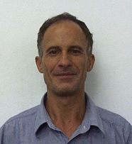

RCMS
Bem vindo, Administrador!
Sair
Painel de Controle
O Grupo
Pesquisadores
Projetos de Pesquisa
Publicações
Indicadores
Antonio Francisco do Prado
prado@dc.ufscar.br
Resumo Profissional
Possui graduação em Engenharia de Fortificação e Construção pelo Instituto Militar de Engenharia (1979), graduação em Matemática Licenciatura Plena pela Faculdade de Filosofia Ciências e Letras de Itajubá (1974), graduação em Engenharia Militar pela Academia Militar da Agulhas Negras (1971), mestrado em Sistemas e Computação pelo Instituto Militar de Engenharia (1986) e doutorado em Informática pela Pontifícia Universidade Católica do Rio de Janeiro (1992). Atualmente é professor Associado Nível 3 / iv da Universidade Federal de São Carlos. Tem experiência na área de Ciência da Computação, com ênfase em Engenharia de Software, atuando principalmente nos seguintes temas: reúso de software, orientação a objetos, reengenharia e transformação de software, engenharia de software na computação úbiqua, ferramentas case, frameworks e engenharia reversa.

Alterar foto
Código Lattes
2014 © Departamento de Computação - UFSCar. Todos os direitos reservados.